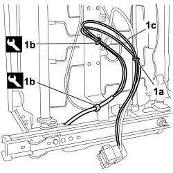
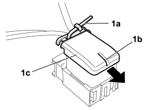
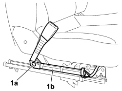
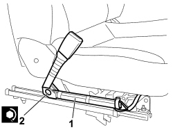

7065A24 ANCHORAGE LINK WITH PRETENSIONER FOR ONE FRONT SEAT BELT LH OR RH R R
- Path
- Procedures > 70 FITTINGS > 7065 SAFETY BELTS AND ACCESSORIES > 7065A FRONT SAFETY BELTS > 7065A24 ANCHORAGE LINK WITH PRETENSIONER FOR ONE FRONT SEAT BELT LH OR RH R R
- Kind
- repair procedure (removal / refitting; the operation number is the code)
- Applies to
- all engines; all production periods
- Interactive page
- https://sloeber94.github.io/elrnDB-fCrm/en/#/194001190
Applies to: all engines; all production periods
- Turn the ignition key to the OFF position and extract it.
- Disconnect the negative and positive battery terminals and insulate them.
- Wait for 10 minutes before continuing.
Description | Connector | |
|---|---|---|
BATTERY |
Applies to: all engines; all production periods
 Removing
Removing
 Refitting
RefittingOp. 7045A10 FRONT SEAT (ONE), LEFT OR RIGHT - R.R.
1. Cut the retaining band (1a), using the special tool release the retaining buttons (1b) and release the wiring (1c) from the seat.
Tool | Description | Function | Validity |
|---|---|---|---|
1878077000 | Knife | Retainer removal |

Applies to: all engines; all production periods
1. Cut the retaining band (1a), lift up the locking tab (1b) and release the cover (1c).

Applies to: all engines; all production periods
1. Pressing on the side shown by the arrow, release the electrical connection (1a) and release it from the coupling (1b) marking the position.
Description | Connector | |
|---|---|---|
1a | DRIVER'S FRONT SEAT BELT PRETENSIONER |
Description | Connector | |
|---|---|---|
1a | PASSENGER FRONT SEAT BELT PRETENSIONER |

Applies to: all engines; all production periods
1. Undo the fixing bolt (1a) and remove the anchorage rod with the pretensioner (1b).
- Place the anchorage rod and pretensioner in the special cupboard, resting it on a free surface.

Applies to: all engines; all production periods
Refitting
Removing1. Reposition the anchorage rod and pretensioner.
1. Reposition the anchorage rod and pretensioner in its housing on the seat.
Check carefully that the centering key, on the seat side panel, is correctly inserted in the corresponding saet on the pretensioner pipe.
2. Tighten the fixing bolt to the recommended torque.
Component | Fastening | dia | Value (daNm) | Validity |
|---|---|---|---|---|
BRACKET ON FRONT SEATS | Bolt | M10 | 3,6 ÷ 4,4 |

Applies to: all engines; all production periods
- Fit the electrical connection on the coupling in the position marked previously.
Description | Connector | |
|---|---|---|
DRIVER'S FRONT SEAT BELT PRETENSIONER |
Description | Connector | |
|---|---|---|
PASSENGER FRONT SEAT BELT PRETENSIONER |
- Fit the retaining buttons on the bracket under the seat.
- Fit the new retaining band on the wiring.
Topics linked from this page (5)
- 5580C AIR BAG SYSTEM
- 7045A10 FRONT SEAT (ONE), LEFT OR RIGHT - R.R.
- A001 BATTERY
- Q020 DRIVER'S SIDE FRONT BELT PRETENSIONER
- Q021 PASSENGER SIDE FRONT BELT PRETENSIONER
Topics that link to this page (6)
- K073 SEAT BELT UNFASTENED WARNING LIGHT ON
- K157 SEAT BELT NOT FASTENED WARNING LIGHT NOT WORKING
- O030 THE SEAT BELT DOES NOT ATTACH TO THE BUCKLE
- O031 SEAT BELTS LOCKED
- 7045A86 FRONT SEAT FRAME (ONE), LEFT OR RIGHT, R.R.
- 7045J30 FRONT SEAT LIFTING MOTOR, LEFT OR RIGHT - R.R. FOLLOWING ELECTRICAL WIRING CHECK